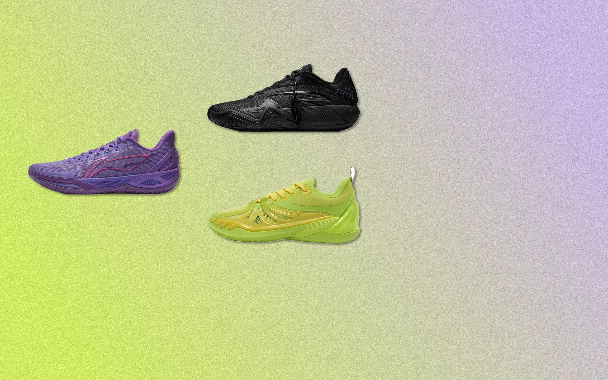

Led the strategy, planning, and execution of AREA 02's first sneaker performance-test video series. The concept tapped into the polarized 2026 basketball-shoe market: classic models holding steep resale premiums, while Chinese brands rise fast on strong value for money.
Working from AREA 02's positioning as a trading exchange, the series moved beyond mainstream brands to review overlooked models — partnering with Jet Chang, a pro player for the P. LEAGUE+ Dreamers, to break down each shoe's on-court performance and real value from an expert's lens. It reinforced the platform's "professional and neutral" image while driving viewers to the App and website to browse and trade on the secondary market.